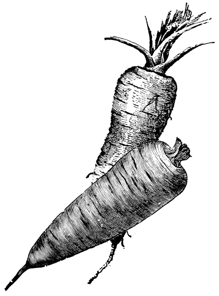
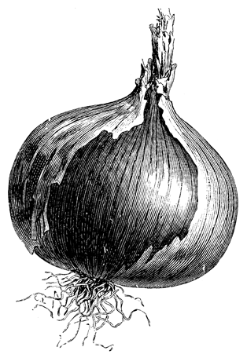

Aunque las albóndigas son un plato que procede de la Conquista y que tiene su origen en la palabra árabe albúnduqa, que significa «bola» o «nuez», la receta tradicional colombiana incorpora el guiso criollo en la cocción de las bolas de carne.
1½ libras de carne molida
Ralladura de pan
1 huevo
Cebolla y tomate
Sal y pimienta y al gusto
1 taza de tomate chonto pelado y picado, sin semilla
1 ajo machacado
1 tallo de cebolla larga picada
1 cucharada de albahaca fresca picada
1 cucharada de perejil picado
1 cucharada de aceite
Sal, pimienta y comino al gusto
Las albóndigas, del tamaño que se desee, se preparan sobre un guiso con cebolla, tomate y ajo salteados en mantequilla. Puede agregársele un poco de vino blanco. Este guiso se mezcla con la carne y la ralladura de pan, para que no se desarmen.
A la salsa preparada con los mismos ingredientes más la albahaca (también pueden preparase con orégano) se le agregan las albóndigas armadas, y se dejan cocinar tapadas a fuego medio. Al final se a sirven con arroz blanco o papa sudada.
1 libra de postas de bagre
Guiso con cebolla, tomate, ajo y sal
Se lava y limpia muy bien el pescado con sal y limón. En una sartén se prepara un guiso con cebolla, tomate, ajo y sal y se colocan con cuidado las postas de bagre. Se dejan a fuego medio por 15 minutos o hasta que estén cocinadas. Se sirve con arroz blanco y patacón.
…y el pueblo, siempre humilde, se contentaba con su merienda, es decir, con las indispensables papas cubiertas de hilachoso queso y de sabroso guiso, provocando con su fragancia el apetito, recreándose el gusto al masticar un rostro de cordero sazonado delicadamente y tostado al calor de un fuego lento, desengrasando luégo con ricos tragos de la que Dios crió tan amarilla y sabrosa.
Rafael Eliseo Santander.
Cuadros de costumbres,
Biblioteca Aldeana de Colombia, 1936.
[Para 6 u 8 porciones]
1 cabeza de cordero
1 taza de grasa de gallina
2 cervezas negras
½ cucharadita de albahaca picada
½ cucharadita de tomillo molido
½ cucharadita de orégano molido
2 tallos de cebolla larga picados
2 dientes de ajo picados
½ cucharadita de achiote o color
Sal, comino y pimienta al gusto
Se lava y se pone a tostar la cabeza. Se vuelve a lavar hasta que quede muy limpia. Se pone en una olla (preferiblemente de hierro) a cocinar con la cerveza y los demás ingredientes. Se saca y se pica. Se sirve acompañada de arepas.
Receta de Simón Posada T.
[Para 4 personas]
1 libra de arroz
1 libra de un grano de su preferencia (lentejas, garbanzo, frijol)
200 gramos de papa
1½ cebollas cabezona
Carne desmechada, chicharrón, pechuga de pollo, chorizo, cadera o lomo
Suero costeño y hogao
Ají al gusto
Prepare la carne desmechada, el chicharrón, la cadera o el lomo en un sartén. Cuando estén a punto, retire. En el mismo sartén, sin botar el aceite de la preparación anterior, sofría la cebolla hasta que quede transparente. Una recomendación importante es cortar las cebollas (al gusto, larga o en cuadros pequeños) con cortes parejos, porque cortes iguales dan, de igual manera, un sabor parejo y contundente. Hierva las papas hasta que queden al dente y córtelas luego en cuadros iguales. Sobre la cebolla en el sartén, agregue el arroz, los granos (que deben haberse cocido con anterioridad al punto) y la papa. Revuelva con cuidado, la idea es que el calentado quede pegajoso y suelto a la vez. Una salsa recomendada puede hacerse con cantidades iguales de suero costeño y hogao y ají al gusto.
Nota: el calentado de lentejas queda muy bien con pechuga de pollo y curry en polvo al gusto.
Del recetario familiar de
Germán Pardo Rojas.
Para 6 libras de carne, una cucharadita de nitro y 1 libra de sal. Se le pone primero un poco de sal y luego el nitro, amasándola mucho todos los días. Se voltea y se le pone sal por unos seis días. Se pone en prensa y se voltea diariamente. Lo mismo se prepara la lengua.
Hernán Pérez de Quesada, hermano del fundador de Santafé, y Gonzálo Suárez Rendón, fundador de Tunja, fueron quienes introdujeron las habas entre las primeras mercaderías que llegaron a Nueva Granada. Las habas constituyen un ingrediente fundamental de numerosas preparaciones del altiplano.
[Para 4 a 6 personas]
2 cucharadas de aceite
2 tallos de cebolla larga picados
1 diente de ajo machacado
½ libra de tocino de cerdo
1 pollo campesino despresado
1 libra de costilla de res cortada en trozos
½ libra de longaniza cortada en pedazos pequeños
3 mazorcas tiernas cortadas en porciones
½ taza de habas frescas
½ taza de arvejas tiernas
½ taza de chuguas o rubas
½ taza de cubios
½ taza de hibias
1 libra de papa sabanera pelada y cortada en rodajas
½ libra de papa criolla pelada y cortada en rodajas
Sal al gusto
En una olla grande con aceite se guisa la cebolla, la sal y el ajo. Sobre estos ingredientes, se prepara un caldo con cuatro tazas de agua, en el cual se ponen a cocinar el tocino y la costilla hasta que ablanden. Luego se añaden las habas, arvejas, chuguas, cubios e hibias, la longaniza y otras dos tazas de agua, cocinándose durante treinta minutos a fuego bajo.
Para el guiso de este cocido tradicional, se sofríe ½ taza de cebolla picada, una taza de tomates chontos picados con una cucharadita de color, una hoja de laurel, media cucharadita de tomillo y orégano frescos y picados hasta que se forme una salsa, a la cual se le agrega cuidadosamente leche y sal al gusto. Con este guiso se baña el cocido, que se sirve con el caldo aparte y bien caliente.
Los departamentos productores de conejo son, en orden de importancia: Boyacá, Cundimamarca y Nariño, donde existe la cría doméstica e industrial.
[Para 4 personas]
1 conejo limpio
3 tazas de agua
1 taza de vino blanco o algún fermentado
1 cebolla cabezona picada
2 tallos de cebolla larga picados
¼ de taza de aceite de oliva o vegetal
2 tomates chontos pelados, sin cemilla, y cortados en cuartos
1 pimentón rojo cortado en rajas
Pimienta y comino al gusto
Tomillo, laurel y orégano al gusto
Sal al gusto
Un día antes se deja el conejo marinando en el vino o la bebida elegida, con sal y adobado con la mitad de las hierbas. Al día siguiente se le retira la marinada y se pone en una olla o caldero grande y se le agregan las cebollas, el aceite, los tomates, el pimentón, el resto de las hierbas, los condimentos y sal al gusto. Se cubre con el agua y se cocina a fuego lento durante dos horas, hasta que la carne del conejo se desprenda de los huesos. Se sirve en plato hondo con abundante salsa. Puede acompañarse con yuca guisada, o con yuca bañada con natas de leche y queso campesino rallado.
1 kilo de carne de cordero, preferiblemente costilla
1 cerveza
Cebolla larga
Ajos
Laurel
Orégano, comino, pimienta, sal y limón al gusto
La carne, cortada en trozos, se sazona con las hierbas, sal y limón al gusto, hasta quedar completamente cubierta. Se deja reposar media hora. Se marina con la cerveza durante unas horas. Se asan a la brasa o en el horno caliente. Se sirve con arroz blanco, papa chorreada y ensalada. Este procedimiento es común para otras carnes asadas.
Los primeros cerdos que llegaron al Nuevo Mundo fueron llevados por Cristóbal Colón en su segundo viaje, en 1493. En total fueron ocho animales, que pueden considerarse los ancestros de todos los cerdos americanos actuales.
[Para 4 personas]
1½ libras de costilla de cerdo partida en porciones delgadas
1 libras de tocino de cerdo partido en porciones delgadas
2 libras de papa criolla mediana
2 tallos de cebolla larga machacada
3 dientes de ajo machacados
Sal y pimienta
Color
Se aliñan las costillas y el tocino con las hierbas, sal, pimienta y el color y se dejan reposando. Se cocina la carne en una olla a fuego alto hasta que adquiera un color blancuzco. Luego, se cocina a fuego lento durante una hora o hasta que el tocino ablande y suelte su grasa, cuidando de que la grasa no se queme y el tocino no se vuelva chicharrón. Con esta misma grasa se termina de freír, revolviendo y sin que seque demasiado.
En la misma olla se ponen a freír las papas criollas previamente cocinadas, hasta que queden crujientes. Se sirve con ají hecho de cebolla, tomate y cilantro.
La fritanga es una de las comidas más populares de Bogotá y sus alrededores. Consiste en un piquete de chorizos, morcilla, longanizas, papas criollas y saladas, chicharrón, plátano y, a veces, otras partes de animales, como corazón de res cocido y frito, hígado, chunchullo, bofe o patas de cerdo, puestos a freír en una gran cantidad de aceite. Hemos recogido las recetas de algunos de los ingredientes principales de este plato en la sección de acompañamientos.
La lengua se adoba desde la víspera con sal, pimienta, cebollas y tomate. Se chuza bien con un tenedor para que le penetre el adobo. Al día siguiente se cocina un poquito, se pela y se vuelve a cocinar en nueva agua hasta que esté muy tierna. Se prepara como se quiera.
Sophie Fonnegra de Silva.
Recetas de cocina, 1959.
[Para 4 personas]
1 lengua de res mediana, aproximadamente de 2½ libras
2 cucharadas de aceite
½ cebolla cabezona
2 zanahorias picadas (opcionales)
Ajo, orégano, laurel y tomillo
Sal, pimienta y comino al gusto
1 taza de alcaparras escurridas
2 cucharadas de mantequilla
½ cebolla cabezona picada
1 tomate

Se coloca la lengua en la olla a presión a hervir en 2 litros de agua alrededor de 30 minutos. Pasado este tiempo se baja y se le saca el agua. Con un cuchillo se limpia totalmente para que le salga la piel o cáscara. En la misma olla se sofríen la cebolla cortada en cuñas, el ajo, la sal y los condimentos. Se vuelve a poner la lengua y se añade más agua para cocinar durante 90 minutos a fuego lento, a hasta que esté blanda.
En una olla aparte se prepara un guiso con mantequilla, cebolla, ajo y tomate. A este guiso se le vierte el caldo de la cocción y se revuelve hasta que espese. Opcionalmente, se pueden añadir dos cucharaditas de harina de trigo o pan rallado. Se agrega la lengua que se ha cortado en lonjas y por último se le ponen las alcaparras escurridas. Se sirve con arroz blanco.
1 muchacho
3 gajos de cebolla larga
¼ de libra de habichuela cortada larga
2 zanahorias cortadas a lo largo
Ajo, sal, pimienta, cebolla, perejil, tomillo y laurel al gusto
Se limpia muy bien el muchacho para dejarlo sin nervios ni rilas. Se alista toda la verdura que esté limpia y cortada a lo largo. Con un chuzo de rellenar carne se abre la carne y se le mete el pedazo de cada alimento con que se desea rellenar, a lo largo de la carne. Se adoba con ajo, sal, pimienta, cebolla, tomillo y laurel. Se cocina en una olla a presión con 3 tazas de agua durante 25 minutos. Se deja enfriar. Se sirve tajado y frío.
Se adoba un pernil de marrano con cebolla, tomate, sal y un poco de pimienta. Se le deja uno o dos días así, pinchándolo para que le penetre el adobo. Se pone en una lata con los adobos y el jugo que haya soltado, y se le vierte una botella de cerveza. Se mete al horno. Se va volteando y bañando con su salsa y más cerveza a medida que va secando. Puede taparse con una lata mientras se cocina, para que no se dore. Cuando esté cocinado se pone a dorar. Se sirve frío o caliente con salsa de moras o con su misma salsa.
[De 4 a 5 raciones]
10 tazas de agua
1 kilo de espinazo de cerdo carnudo
¼ de libra de cubios
¼ de libra de hibias
½ libra de papas criollas pequeñas
½ libra de papas sabaneras pequeñas
¼ de libra de arvejas envainadas
¼ de libra de habas frescas
2 mazorcas peladas y partidas
2 plátanos maduros pelados y partidos
2 tallos de cebolla larga picada
4 tomates chontos pelados, sin semilla y picados
½ ajo picado
Sal y pimienta al gusto
En una olla grande con agua se cocina el espinazo durante 45 minutos. Se agregan todas las especias, vegetales y la sal al gusto. Se deja cocinar por 45 minutos o hasta que esté blando. Luego se agregan las mazorcas y las papas, que se cocinan sin dejar que se desaten. Se saca el espinazo y se corta en porciones. Finalmente se sirve con todos los vegetales, papa, mazorca y los plátanos, que se cocinan por aparte, y se baña con un guiso hecho con cebolla, tomate, ajo, sal y pimienta al gusto. Se sirve el caldo aparte.
1 pollo grande campesino
½ libra de mantequilla de vaca
½ libra de manteca de cerdo
Color, comino, cebolla, ajos, laurel, perejil, tomillo y sal al gusto
De todos los condimentos un poquito
Se pican las hierbas y se marchitan al fuego con mantequilla. Se echa el pollo entero o en presas y se riega con esta salsa un cuarto de hora. Si el pollo es duro se adiciona una botella de agua y se deja hervir hasta que esté, y solo quede un pocillo de salsa. Al final se le pone pan rallado disuelto en leche. Se sirve con papas cocinadas al vapor, yuca, arracacha, arroz seco blanco y una ensalada. Si no se desea tan grasoso se merma la mantequilla.
La genealogía del Puchero santafereño puede remontarse a un cocido español que existe desde el Medioevo y tiene el poco apetitoso nombre de «olla podrida». En realidad, el adjetivo original era poderida, en referencia a los poderosos que podían hacerse con los ingredientes. Sin embargo, Covarrubias, en su Tesoro de la lengua castellana o española, afirma: «Púdose dezir podrida, en quanto se queze muy despacio, que casi lo que tiene dentro viene a deshazerse, y por ella razón se pudo dezir podrida, como la fruta que se madura demasiado. Pero aquello podrido es lo que dá el gusto, y punto».
8 tazas de agua
1 libra de carne de res, pulpa, cortada en trozos
1 pollo despresado
½ libra de costillas de cerdo picadas
½ libra de costillas de res picadas
¼ libra de carne cecina picada
¼ libra de tocino picado
½ libra de longaniza picada
½ zanahoria picada
1 libra de yuca pelada y partida
2 plátanos verdes partidos en trozos con las manos
2 plátanos hartones maduros picados en porciones
2 arracachas partidas en astillas
1 libra de papas sabaneras
2 mazorcas peladas y partidas
2 trozos de ahuyama amarilla
2 hojas de laurel
2 dientes de ajo picados
2 cebollas cabezonas partidas en dos
½ cucharada de tomillo molido
Cilantro
2 hojas de repollo
Guiso espeso de cebolla, tomate y ajo
Sal y pimienta al gusto
A un caldo básico con la sustancia de las carnes condimentadas y cocinadas se le añaden los plátanos y las mazorcas, dejándolo cocinar por 15 minutos. Se agregan las papas, el repollo y luego la yuca. Se deja hervir durante 25 minutos o hasta que ablanden. Se agregan las carnes y se dejan calentar. Se escurre todo y se sirve en platos individuales junto al plátano maduro (este se cocina aparte con un pedacito de panela), procurando que cada porción reciba un poco de cada ingrediente. El repollo se pone encima y se baña con el guiso caliente. Se sirve el caldo aparte.
[Para 4 a 5 personas]
1 kilo de sobrebarriga cortada en trozos
1 tallo de cebolla larga picada
1 cebolla cabezona pelada y picada
2 dientes de ajo picados
3 hojas de laurel
Tomillo, mejorana, laurel, orégano, sal, comino y pimienta al gusto
Guiso de cebolla y tomate
La sobrebarriga se ablanda en olla a presión durante 1 ½ horas con la cebolla, el ajo, el laurel, las yerbas y los aliños. Cuando se ablande, se pica en porciones y se pone en una olla con una taza de su caldo y el guiso. Si la salsa queda muy aguada, puede añadírsele un poco de miga de pan. Se conserva a fuego lento por 30 minutos. Se acompaña de arroz blanco, papa y yuca chorreadas.
[Para 4 a 5 personas]
1 kilo de sobrebarriga cortada en trozos
1 tallo de cebolla larga picada
1 cebolla cabezona pelada y picada
2 dientes de ajo picados
3 hojas de laurel
Tomillo, mejorana, laurel, orégano, sal, comino y pimienta al gusto
1 cerveza amarga
Se ablanda igual que la anterior. Cuando esté cocinada, se escurre y se pone sobre una lata engrasada. Si se quiere, puede rociarse con miga de pan. Se baña con la cerveza. Se lleva al horno precalentado a 350°f por 15 minutos, rociándole de vez en cuando cerveza por encima. Se sirve con papa chorreada y arroz seco.
La alimentación prehispánica incluía el consumo de peces como el capitán, el barbudo, la pucha, los cangrejos y camarones de río. Pocos sobreviven a la contaminación actual de las aguas del altiplano. Sin embargo, existen cultivos de tilapia, cachama y trucha, con los cuales se realizan las preparaciones tradicionales.
La trucha, proveniente de Tota y otros lugares donde haya lagunas, represas o embalses, tiene diversos modos de preparación. Lo importante es que sea preparada lo más fresca posible y que quede perfectamente cocinada. Entre las formas de cocinarse se encuentran: a la brasa, en mantequilla, en salsa, guisada a la criolla u horneada, entre otras.
4 libras de trucha
2 tazas de leche
2 tallos de cebolla picada
2 tomates maduros picados
1 diente de ajo
1 cucharadita de tomillo
3 cucharadas de mantequilla
Pimienta y sal al gusto
Se limpian las truchas y se escaman. Se prepara un guiso con la cebolla, el tomate, el ajo, el tomillo, pimienta y sal. Se le agregan las truchas y se dejan sofreír por 10 minutos. Se le pone la leche y se deja consumir a fuego lento, sin revolver.
|
 |